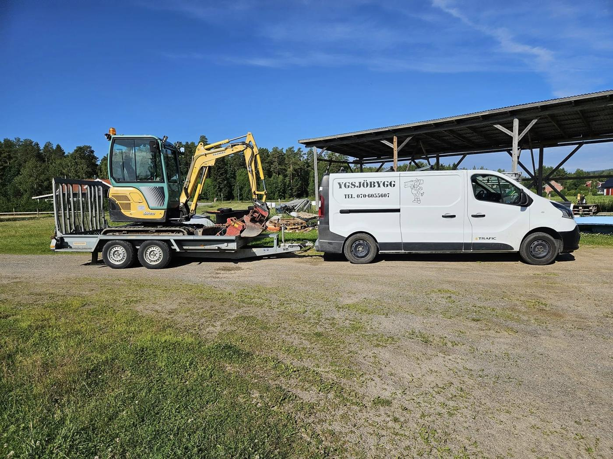
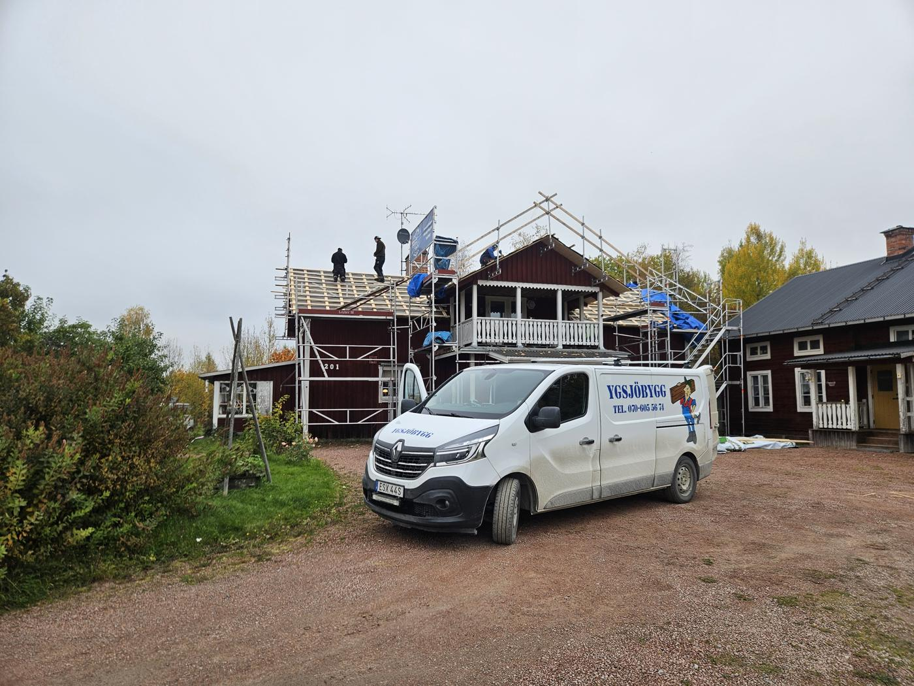
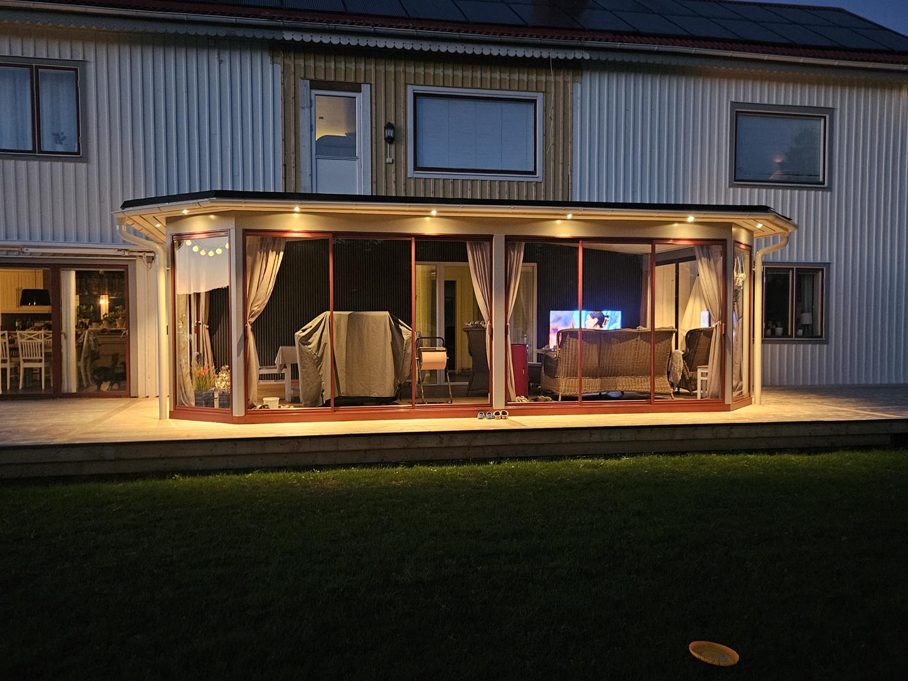
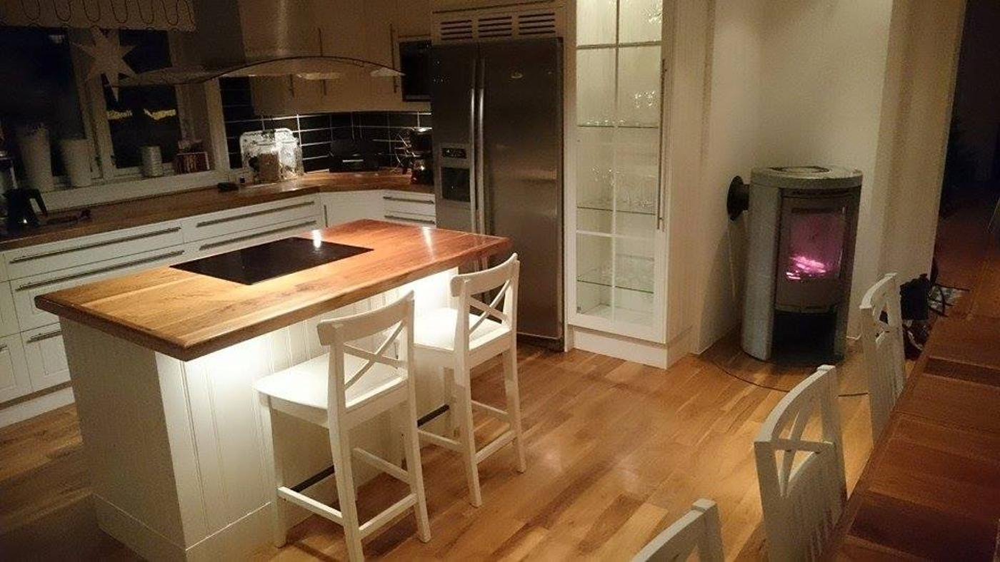
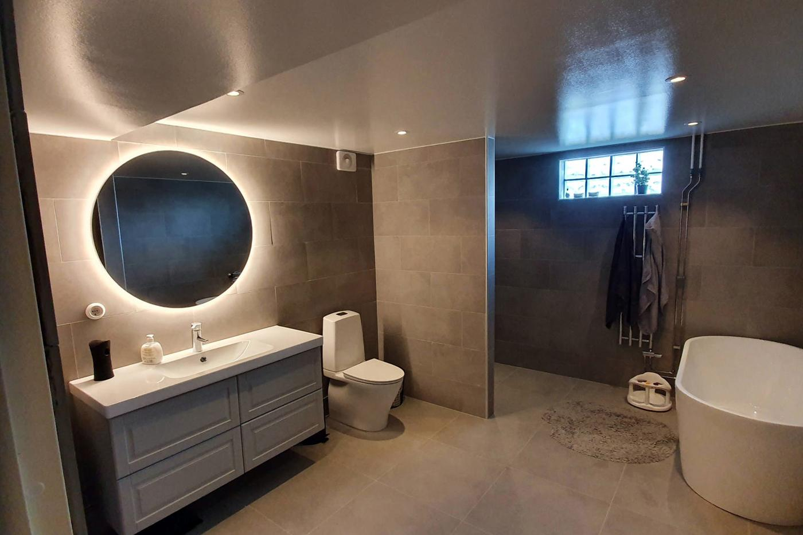
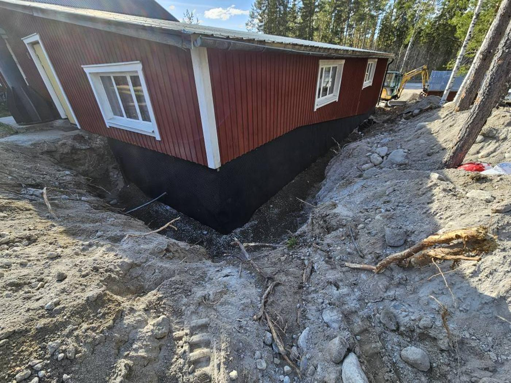
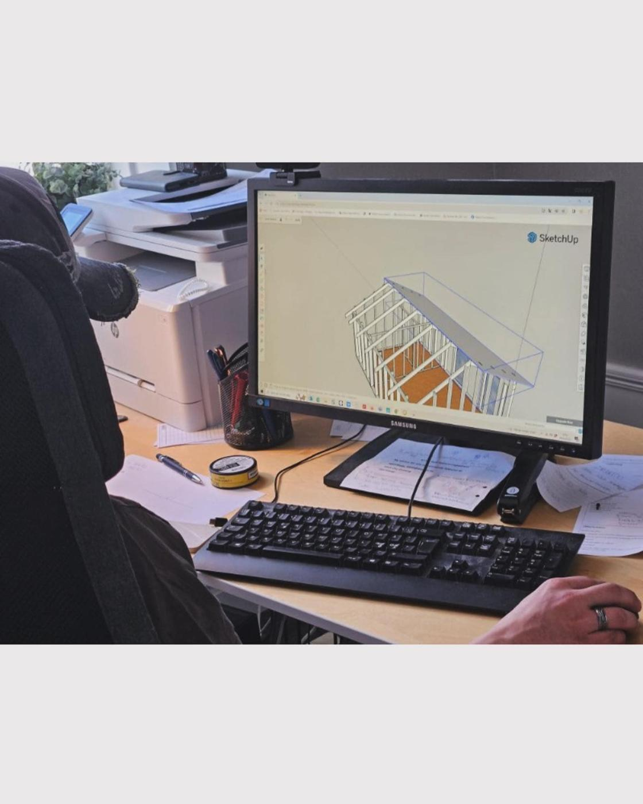
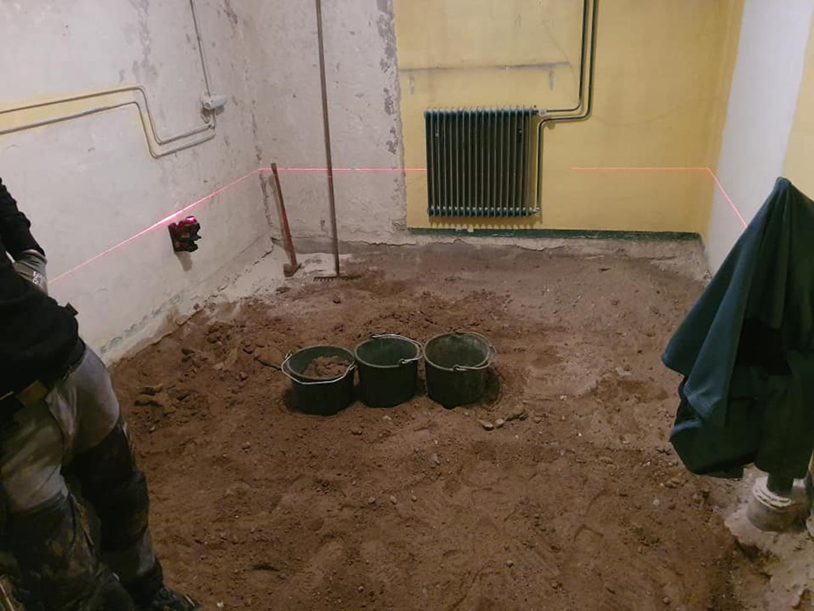
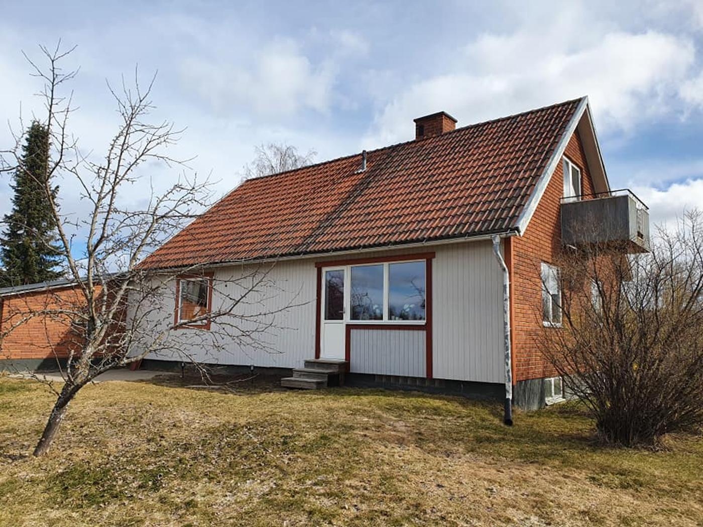
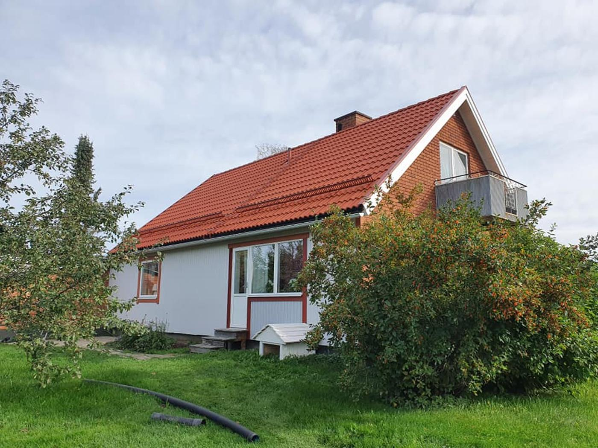

Totalentreprenad i Ljusdals kommun sedan 2010
Ett bygge. En kontakt.
Hela vägen till färdigt.
Ygsjöbygg är byggfirman i Färila som tar hand om allt — tak, tillbyggnad, kök, badrum och mark. Vi håller i elektrikern, rörmokaren, plattsättaren och målaren. Du behöver bara ringa oss.
- 2010firman startade
- 20+års erfarenhet
- 1kontakt genom hela bygget
- Egengrävmaskin
Den lilla byggfirman med den stora kompetensen
Vi värdesätter dig som kund och ditt projekt
Ygsjöbygg bildades 2010 i Färila, Ljusdals kommun. Vi har mer än 20 års erfarenhet i byggbranschen och vårt fokus ligger på säkerhetstänk och noggrannhet. Vi tar hand om era projekt från första spadtaget till färdig produkt.
När du anlitar oss slipper du välja bland många olika hantverkare — den logistiken sköter vi. Vi har goda samarbeten med duktiga lokala hantverkare i kommunen och synkroniserar projektet med rörmokare, elektriker, plattsättare och målare.

Detta är vad vi gör
Sex sätt vi kan hjälpa ditt hus
Från ett tak som måste bytas före vintern till en tillbyggnad som ritas i 3D innan spaden sätts i marken.

Tak och takbyte
Vi tar hela taket: rivning, kontroll av underlaget, riktning, ny papp och läkt, nytt tegel eller ny plåt. Och ställningen som gör att jobbet kan göras säkert.
Läs mer
Tillbyggnad och uterum
Vi ritar, söker bygglov åt dig och bygger. Från grunden och golvåsarna till färdigt rum med ljusinsläpp och el.
Läs mer
Kök
Vi river det gamla, rätar upp det som är snett, och sätter det nya. Rörmokare, elektriker och plattsättare bokar vi.
Läs mer
Badrum
Vi bygger badrum enligt gällande branschregler — tätskikt, fall mot brunn och dokumentation. Med plattsättare, rörmokare och elektriker på plats i rätt ordning.
Läs mer
Gräv och mark
Vi har egen grävmaskin. Det betyder ingen extern maskinhyra, ingen väntan på någon annans schema, och ett pris på hela jobbet.
Läs mer
Ritning och 3D
Vi ritar upp projektet skalenligt i 3D-CAD. Du ser hur det blir, och ritningen blir samtidigt underlag till bygglovsansökan.
Läs merReferensarbeten
Jobb vi har gjort i trakten
Före och efter
Samma hus, några veckor emellan
Bilderna är tagna av oss på plats. Ingen retusch, ingen stockbild.

Ljusdals kommun · Badrum
Från kall källare till badrum
Ett outnyttjat källarutrymme med sandgolv blev ett badrum med både badkar och dusch, grå klinker och golvvärme i hela golvet. Ygsjöbygg höll i entreprenaden och ansvarade för att elektriker och rörmokare kom i rätt ordning.


Färila · Tak
Nytt tak på 1950-talsvillan
Mossigt och trött tegel byttes mot nytt. Det är först när man ser bilderna bredvid varandra som man ser hur mycket ett tak gör för ett hus.
Så går det till
Fyra steg från första samtal till färdigt
Vi kommer ut
Vi tittar på huset, lyssnar på vad du vill ha gjort och säger ärligt vad vi ser. Det kostar ingenting.
Ritning och offert
Behövs det ritas, ritar vi i 3D-CAD. Du får en offert på hela jobbet och ett underlag till bygglovsansökan.
Vi bygger
Vi bokar och håller i underleverantörerna. Dyker det upp något under teglet säger vi till samma dag — inte på fakturan.
Genomgång
Vi går igenom jobbet tillsammans, städar efter oss och lämnar ett hus du kan sluta tänka på.
Vanliga frågor
Det folk brukar undra
Vad betyder totalentreprenad i praktiken?
Att du har en kontakt. Vi håller i elektriker, rörmokare, plattsättare och målare, ser till att de kommer i rätt ordning och svarar för att projektet flyter på. Du behöver inte vara projektledare på din egen semester.
Var jobbar ni?
Färila och Ljusdals kommun i första hand — Ljusdal, Järvsö, Hennan, Ygsbo, Hammra och orterna däromkring. Ring så säger vi direkt om vi kan ta jobbet.
Hjälper ni till med bygglov?
Ja. Vi ritar upp projektet skalenligt i 3D-CAD, och ritningarna fungerar som underlag till bygglovsansökan.
Hur snabbt kan ni börja?
Det beror på årstid och vad som är inbokat. Hör av dig i god tid — särskilt för takjobb, som helst ska göras under barmarkssäsong.
Kan ni ta mindre jobb också?
Ja. Vi åtar oss både stora och små tak, gamla som nya, och allt däremellan.
Ring så kommer vi ut och tittar
Du får ett pris på hela jobbet — inte ett ungefärligt kvadratmeterpris. Vi svarar på telefon under dagen och ringer upp på kvällen om vi står på ett tak.
- Telefon
- 070-605 56 74
- E-post
- info@ygsjobygg.se
- Adress
- Hammarnvägen 12, 827 62 Färila